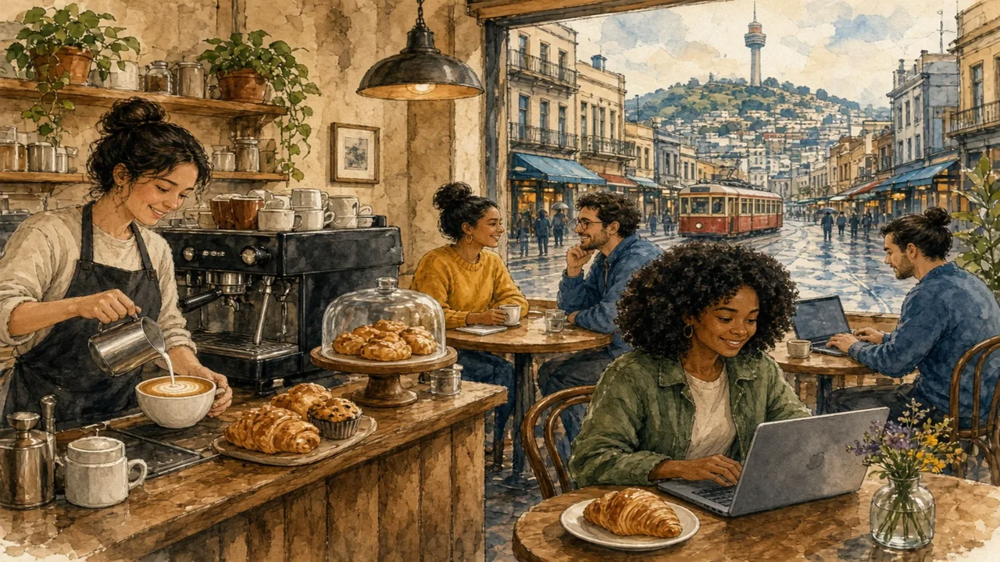

Melbourne and Wellington take coffee very seriously — and the story of how that happened is a story of migration.
Oceania · Food, drink & migration · Lesson 7 of 7
🌍 World map · ← Around the World: Oceania · 🌱 Easier version (A2) · ← Paradise Under Pressure: Life on a Pacific Island

Each new word is hidden in a sentence. Read it aloud and say what you think the bold word means from the rest of the sentence — then reveal it and see how close you were.
Read each part. After it, there's a quick comprehension check (try the questions from memory first), then one thing to discuss.
Visitors who expect only beer and meat pies are often surprised: coffee in Melbourne, Sydney and Wellington is serious business. People queue for a favourite café, know their baristas by name, and discuss beans, milk and roasting methods. Instant coffee was the norm until the second half of the twentieth century, and big chains had little success: Starbucks, which came to Australia in 2000, closed most of its stores there in 2008 because customers preferred independent cafés. The most characteristic drink is the flat white, an espresso with smooth, velvety milk and only a thin layer of foam. Other local favourites are the long black, an espresso diluted with hot water, and the “magic”, a Melbourne speciality.
1. Why did Starbucks close most of its Australian stores in 2008?
2. What is a flat white?
1. Because customers preferred independent cafés.
2. An espresso with smooth, velvety milk and little foam.
After the Second World War, large numbers of Italian and Greek migrants arrived in Australia, and many of them brought a tradition of espresso and café life. Pellegrini's Espresso Bar, opened in Melbourne in 1954, installed one of the first espresso machines and still operates today. If those migrants had not settled in Melbourne, the city would not have the coffee culture it has now, and if European-style cafés had not appeared, Melbourne's laneways might not have become what they are. Today Melbourne has one of the largest Greek communities outside Greece, and its multicultural character shows in its food, from Vietnamese bakeries to Ethiopian restaurants. Wellington developed a similar café culture, helped by a compact centre, a creative population and a love of cooler weather and warm drinks.
1. When did Pellegrini's Espresso Bar open?
2. Who brought espresso culture to Australia?
1. In 1954, in Melbourne.
2. Post-war migrants from Italy and Greece.
Australia and New Zealand both claim to have invented the flat white, and the argument is friendly but serious. Café owners in Sydney in the mid-1980s and in Wellington in the late 1980s each say they were the first, and nobody can prove either claim. What is clear is that the drink has spread widely: it now appears on menus in London, New York and Tokyo, and the arrival of the flat white on the Starbucks menu in 2015 showed how far it had travelled. Many people in the region feel that this is an example of the way small countries can influence global culture. If the two countries had not kept experimenting with milk and espresso, the drink might never have become so widely known.
1. Which two countries claim the flat white?
2. What shows how far the flat white has spread?
1. Australia and New Zealand.
2. It appears on menus around the world, including Starbucks since 2015.
A stereotype and the reality rarely match. This lesson's grammar gives you the structure to describe the difference.
Complete each sentence about this topic.
1. If Italian migrants settled in Melbourne, the city wouldn't have its coffee culture today. (not — past perfect)
2. If Melbourne so multicultural, its cafés wouldn't have developed as they did. (not be — past simple)
3. If the barista hadn't trained in Italy, the café such good espresso now. (not serve — would)
1. hadn't
2. weren't
3. wouldn't serve
1. If the two countries had not kept experimenting, the flat white so widely known today. (not be)
2. If cafés weren't so popular, the laneways so busy last night. (not be — would have)
3. If I had learned to make coffee properly, I my own café now. (have — would)
1. wouldn't be
2. wouldn't have been
3. would have
Hold on to this — you'll need it in the Speak tab.
The surprise that visitors feel at an Australian café reveals how out of date the “beer and pies” picture is. It dates from a time when the countries were less diverse, and ignores the influence of migrants, who changed what people ate and drank. Coffee is a good example of how culture is not fixed: it is created by people moving, mixing and trying new things. It also shows that national identity is not a closed list of traditions, but something that continues to be made, including by those who arrived recently.
This is the heart of the lesson — do all of it out loud. The timer is there to keep you going: fill the time with detail rather than escaping it.
Explain how migration shaped coffee culture in Australia and New Zealand, as if to a friend who thinks they only drink beer. Move through the arc: the stereotype and the surprise → how migration changed the city → who invented the flat white.
Use today's grammar at least three times, and work in at least five key words (barista, espresso, flat white, migrant, laneway, specialty, roast, multicultural).
“Global chains harm local culture more than they help.” Discuss.
Tell a story from your own world — work, family, the news — that connects to this topic. Stuck for an idea? Pick one of these and run with it:
🌍 World map · ← Around the World: Oceania · 🌱 Easier version (A2) · ← Paradise Under Pressure: Life on a Pacific Island